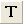

グラフィックオブジェクトから
From-Graphical-objs
グラフィックオブジェクトからスクリプトを実行グラフィックオブジェクト(テキスト、線、図形)とイベントを結び付け、そのイベントで実行されるスクリプトを含むことができます。グラフィックオブジェクトはページと結びつけられるため、テンプレート、ウィンドウファイル、プロジェクトファイルに保存されます。
ボタン
頻繁に使われるスクリプトのいくつかをOriginのユーザインターフェース(GUI)のボタンに割り当てて、スクリプトの実行を自動化することもできます。 これには、次の手順が必要です。
新しく開いたOriginプロジェクトから：
- プロジェクトウィンドウの左側にあるツールメニューからテキストツール

をクリックします。
- グラフまたはワークシートの背景部分をクリックします（ワークシートの場合、最後の列の右側にある灰色の領域をクリックします）。 これにより編集モードになります。 テキストオブジェクトに"Hello" と入力し、オブジェクトの外側をクリックします。これによりボタンのラベルが作成されました。
- 次に、ALTキーを押しながら、作成したテキストをダブルクリックします。 オブジェクトダイアログが開き、プログラミングタブが表示されます。
- ダイアログの左上にオブジェクトの名前の入力欄があります。これをGreetingに変更します。
- 下のテキストボックスに以下のスクリプトを入力します。
type -b "Hello World";
- のあとでスクリプトを実行ドロップダウンリストから、ボタンアップを選択し、OKをクリックします。
- これでボタンが作成できました。ボタンを押すと、スクリプトが実行され、ポップアップウィンドウに "Hello World" と出力されます。
スクリプトウィンドウにのみ存在しているテキストスクリプトとは異なり、このボタンとスクリプトは、Originプロジェクトを保存するときに保存されます。
また、グラフィックオブジェクトに設定されたスクリプトは、オブジェクト名とrunメソッドを使用して実行できます。スクリプトウィンドウ（ウィンドウ：スクリプトウィンドウ）を開き、次のように入力します。
greeting.run()
そしてEnterキーを押すと実行されます。
 | ボタンを削除する方法は2つあります：
- Altキーを押しながらボタンをダブルクリックして、テキストオブジェクトダイアログのプログラミングタブを開きます。ボタンアップをなしに戻します。OKをクリックします。これでボタンは通常のテキストに戻ります。このテキストを削除します。
- メニューから編集：編集モードを選択して、凡例や軸タイトルなどを含むすべてのテキストとグラフィックオブジェクトの編集モードをオンにします。作成したボタンオブジェクトを選択して削除します。Note!!! 変更後、必ず編集モードボタンをもう一度選択して編集モードを終了してください。
|
線
以下は、グラフ上に垂直線を作成し、その線を移動させるとX位置のデータの補間値を出力するスクリプトです。
// グラフ上に垂直線を作成
draw -n MyCursor -l -v $(x1+(x2-x1)/2);
MyCursor.HMOVE = 1; // 水平移動を許可
MyCursor.color = color(orange); // オレンジ色に変更
MyCursor.linewidth = 3; // 線を太くする
// グラフにラベルを追加
label -sl -a $(MyCursor.x) $(Y2+0.05*(Y2-Y1)) -n MyLabel $(%C(MyCursor.x));
// 線にスクリプトを割り当て
MyCursor.script$="MyLabel.x = MyCursor.x;
MyLabel.y = Y2 + MyLabel.dy;
doc -uw;";
// 線が動いた後スクリプトを実行するようにする
MyCursor.Script = 2;
その他のオブジェクト
グラフィックオブジェクト（テキスト、線、図形）には、イベントが発生したときに実行されるスクリプトを付加することができます。
この例では、グラフ上の四角形（オブジェクト名RECT）が移動またはサイズ変更した時にスクリプトが実行されるように設定します。
- プロット操作・オブジェクト作成ツールバーの四角形ツールを使って、グラフに矩形を描きます。
- オブジェクト操作ツールバーの「プロット後部に移す」ボタンを使って、データの後ろに矩形を配置します。
- Altキーを押しながら、矩形をダブルクリックして、オブジェクトのプログラム制御を開きます。オブジェクト名がRectであることを確認します。
- 次のスクリプトを入力します。
%B = %C;
%A = xof(%B);
dataset dsRect;
dsRect = ((%A >= rect.x1) && (%A <= rect.x2) &&
(%B >= rect.y3) && (%B <= rect.y1))?%B:0/0;
stats dsRect;
delete dsRect;
type -a Mean of $(stats.mean);
- 「～のあとでスクリプトを実行」ドロップダウンリストで移動／サイズ変更を選びます。
- OKをクリックします。
この矩形を移動したり、サイズ変更したりすると、スクリプトが矩形の範囲内にあるすべてのデータポイントの平均を計算し、スクリプトウィンドウに出力します。グラフィックオブジェクト範囲を定義して以下のように実行することもできます。
GObject gobj = [Graph1]1!rect;
gobj.run();